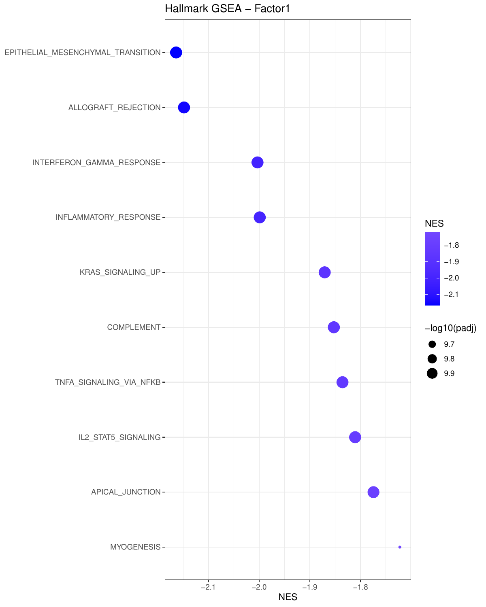
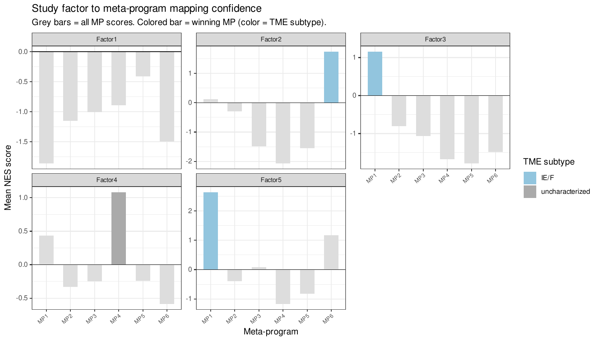

TME state characterization
a3_tme_states.Rmd
library(CellTFusion)
#> Once latent factors have been extracted (see Cell groups and latent factors), each factor can be linked to known biological programs:
- Hallmark GSEA — associate each factor with MSigDB Hallmark gene sets.
- Meta-program mapping — match each factor to cancer type-specific reference programs derived from TCGA.
- TME subtype annotation — relate factors to established TME subtypes.
These steps use:
-
counts.norm— normalized expression matrix (genes x samples). -
latent_spaces— output ofcompute.latent_factors();latent_spaces$Zis the samples x factors matrix.
Hallmark GSEA per latent factor
compute_factor_gsea() fits a multivariate
limma model with the latent factor scores as covariates,
ranks genes by their moderated t-statistic for each factor, and runs a
pre-ranked GSEA with fgsea (Korotkevich et al. 2021) against
the MSigDB Hallmark collection (Liberzon et al. 2015). The Hallmark
collection summarizes about 50 well-defined biological processes
(e.g. EMT, interferon response, hypoxia), a natural vocabulary to
interpret data-driven factors. The samples of features_df
must be in the same order as the columns of RNA.tpm.
gsea_results <- compute_factor_gsea(
RNA.tpm = counts.norm,
features_df = latent_spaces$Z,
plot_dot = TRUE,
top_n = 10,
file_name = "Tutorial"
)| Element | Description |
|---|---|
$DE_results |
Named list of limma results, one per factor |
$GSEA_results |
Named list of fgsea results, one per factor |
With plot_dot = TRUE, a dot plot of the top Hallmarks is
saved per factor (dot size = significance, color = normalized enrichment
score, NES):

Mapping factors to TCGA meta-programs
What are meta-programs?
A meta-program (MP) is a recurrent transcriptional
program reflecting a cell state (e.g. cell cycle, hypoxia,
epithelial-mesenchymal transition, interferon response) that recurs
across tumors and cancer types. Gavish et al. (Gavish et al.
2023) characterized such programs from single-cell RNA-seq
across many cancers. CellTFusion follows the same logic
with bulk TCGA data: it derives cancer type-specific meta-programs from
TCGA, so that factors found in a new study can be described with a
shared vocabulary of TME states.
How map_factors_to_metaprograms() works
-
Reference (pre-built, per cancer type):
CellTFusionwas run on a TCGA cohort, and the Hallmarks were clustered by their NES profiles across the TCGA factors (derive_meta_programs()). Each resulting meta-program is a set of Hallmarks, annotated with a TME subtype (see below). References are shipped for"blca"(bladder cancer),"luad"(lung adenocarcinoma) and"skcm"(melanoma). -
Study factors: the Hallmark NES of each study
factor come from
compute_factor_gsea(). -
Matching: for each study factor and each
meta-program, the mean NES of the meta-program’s Hallmarks is computed.
The meta-program with the highest positive mean NES is the factor’s
best_MP.
In other words: which known program does this factor’s Hallmark signature resemble most?
mp_mapping <- map_factors_to_metaprograms(
gsea_study = gsea_results,
cancer_type = "skcm",
plot = TRUE,
file_name = "Tutorial"
)| Element | Description |
|---|---|
$factor_mapping |
One row per study factor: factor, best_MP,
best_score (its mean NES), all_scores (mean
NES for every meta-program) and TME_subtype of the best
meta-program |
$reference |
The meta-program reference: meta_program, its
hallmarks and TME_subtype
|
A custom reference can be used with mp_file, either a
data frame like $reference or the path to an
.RData file containing an object named
meta_programs.
With plot = TRUE, each panel shows a study factor: grey
bars are the mean NES for every meta-program, and the best-matching one
is colored by its TME subtype:

TME subtypes
map_factors_to_TME() uses the TCGA annotations of Bagaev
et al. (Bagaev et al.
2021), who defined four pan-cancer TME subtypes (Molecular
Functional Portraits, MFP):
- IE (immune-enriched, non-fibrotic) — high immune infiltration, low stromal signal.
- IE/F (immune-enriched, fibrotic) — high immune infiltration with a fibrotic/stromal signature.
- F (fibrotic) — stroma-dominated, low immune infiltration.
- D (depleted) — low immune infiltration and low fibrosis.
These subtypes are associated with response to immune checkpoint
blockade. For a TCGA cancer type, map_factors_to_TME()
matches the TCGA patients in Z to their MFP subtype and
tests each factor across the four subtypes with a Kruskal-Wallis test.
Factors with p < 0.05 are labeled with the subtype that has the
highest median score; the others are labeled
"uncharacterized". This is how the TME subtypes of the TCGA
meta-program references were assigned
(annotate_metaprograms_TME()).
tme_annotation <- map_factors_to_TME(
cancer_name = "skcm",
Z = latent_spaces$Z, # TCGA samples x factors
plot = TRUE,
file_name = "Tutorial"
)Deriving meta-programs
To build your own reference, for example from several cohorts,
derive_meta_programs() clusters the Hallmarks by their NES
profiles across factors. The number of meta-programs k is
chosen at the elbow of the within-cluster sum of squares if
NULL.
meta_programs <- derive_meta_programs(
gsea_results = gsea_results,
k = NULL,
file_name = "Tutorial",
plot = TRUE
)
Running everything with
CellTFusion()
The GSEA and meta-program mapping are run by
CellTFusion() when cancer_type is given:
res <- CellTFusion(raw.counts = raw.counts, cancer_type = "skcm")
res$TME_states # factor-to-meta-program mapping
res$Metaprograms_reference # meta-program reference used